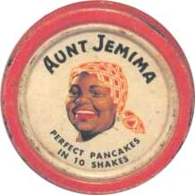
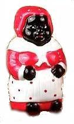
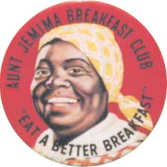

Заппа'zУх!Ой!
русский более или менее регулярный бюллетень для поклонников американского композитора
Frank'а Vincent'а Zappa'ы
Выпуск.33 (28 июля 2001)
Сласти по Фрэнку
Хорошая песня понятна даже птичкам. Жукам, стрекозам и дедушке Крылову.
Ow ow ow ow
Rundee rundee rundee
Dinny wop wop
Ow ow ow ow
Rundee rundee rundee
Dinny wop wop
Гражданам с высшим и даже средним-специальным образованием простой мышечной радости, счастливой беззаботности здоровых уха, горла и носа не достаточно. Они требуют смысла. Социальной значимости и идейной зрелости. Приходится гению божественную гармонию словами выражать. На предложения вечность нарезать, как сыр, как хлеб, как ветчину.
Electric Aunt Jemima
Goddess of Love
Khaki Maple Buckwheats
Frizzle on the stove
Пожалуйста, рубайте с маслом, с кленовым сиропом водостойким, как клей "Суперцемент". Горяченькие с пылу, с жару.
Вах! Воздух! Газы! Просвещенные граждане хватаются за головы, дипломы глотают не жуя и режут вены университетскими значками.
Ведь, что может быть возмутительней Тетушки Джамаймы? Рабинович на винте? Папазашвили с четырьмя ведущими? Молдованин квашеный? Чукча газированный?

Сто двадцать лет тому назад два предприимчивых джентльмена Chris L. Rutt и Charles G. Underwood (такая пара фамилий! можно подумать Фрэнк не только слова в песне, сам ход истории мог передернуть) пытались впаривать народу смесь для мгновенного приготовления блинов. Порошок от блох не пошел, добавили сахара и рынок пищепродуктов распахнулся сам собой.Только вот капризен и разборчив, гад. Пока колбасу "Краковской" не назовешь никто в рот брать не станет. Под звучное же имечко, как под музыку кабацкую, любая дрянь легко проскакивает в горло.
А тут, как раз удача, в родном городе St. Joseph, штат Missouri, после концертов министрелей (в ту пору популярнейшие шайки-лейки белых, переодетых в черных для потехи) все население мурлычет задорные куплетики про повариху Мать Джамайму. Такая негритоска-губошлеп, поперек себя шире, с косынкой на голове и фартуком на пузе. То есть, народная любовь уже имеется, осталось только присвоить, оформив товарным знаком. Раз, два... Готово!
Это уже потом им всем, европеоидным жителям, страны стоградусной политической, санитарной и орфографической корректности вдруг станет стыдно за ненароком оскорбленное достоинство афро-американской женщины, честной налогоплательщицы с неотъемлемым правом голоса.
Только ФЗ какое дело до этих запоздалых мук расистского исторического сознания? Когда он сам себя из списка белых повелителей планеты легко и просто исключал.
Hey, you know something people?
I'm not black
But there's a whole lots of times
I wish I could say I'm not white!
И все что у них, бледнолицых, тщательно скрываемые родимые пятна нарциссизма, гонорейная пена прокисшего арийского стыда и зудящийся сифак неискупаемых грехов перед другими этносами, ему Фрэнку, просто веселая кичуга. Приметы детства, куриный помет бытового идиотизма. Семечки!
Queen of my heart
Please hear my plea
Electric Aunt Jemima
Cook a bunch for me

Нравится ему эта дурацкая наклейка, и кухонные частушки, и фарфоровая солонка. Вся этот образная система местечкового ума. Если большой и толстый, то Aunt Jemima, если вертлявый и нарядный, то Little Black Sambo.Система устойчивых стереотипов обычный источник вдохновения для язвы и ехиды, сатирика то есть. Фрэнк в этом смысле не исключение. И если на донце провинциальных мозгов калифорнийского водилы или "буфетчицы с автозаправки" все предметы классифицируются сообразно расистской системе признаков, "вот это чисса Mammy", "тут вылитая Aunt Jemima'а", "ну, прям Sapphire" и "Jezebel ваще не отличить", то Фрэнк всего лишь верный правде жизни, об этом непременно напомнит. И не раз.
Коль в этом немузыкальном, негармоничном мире без слов совсем не обойтись, то пусть как в детстве все нескладушки-неладушки, по-крайней меру, будут обязательно смешными.
Tried to find a reason
Not to quit my job
Beat me till I'm hungry
Found a punk to rob
Love me Aunt Jemima
Love me now & ever more
(Love me Aunt Jemima)
Ну, а уж если очень допекут доценты с кандидатами, искатели философского камня и психологического песка, то для них, занудливых всегда у Фрэнка есть и саечка, и фук и просто честный щелчок по лбу.
|
"I get kind of laugh out of the fact that other people are going to try to interpret that stuff and come up with some grotesque, interpretations of it. It gives me a certain amount of satisfaction. You can imagine how insane that must get on a song 'Electric Aunt Jemima' which was written about an amplifier. Yes, it's Standall amplifier, about this big, that I used on a couple of sessions" (Zappa: 1969) |
 |
"Временами меня по-настоящему потешает то, что некоторые люди пытаются интерпретировать такие вещи и усматривают невероятный, нелепый подтекст у всего этого. Честное слово, я получаю от подобного настоящее удовлетворение. Можете вообразить до какой ахинеи можно дойти, например, толкуя слова песни 'Electric Aunt Jemima', которая, на самом деле, написана об усилителе. Ну, да, о усилителе Standall, вот таком огроменном, который я пару раз использовал в студии" (Заппа: 1969) |
В конце-концов сами же проблему и создали, черти высоколобые! Своей собственной неспособностью воспринимать простую песню, понятную клесту, чижу и козодою.
Dit-dit-dit-dit dit-dit-dit-dit
Dit-dit-dit-dit ditty-ditty
Dit-dit-dit-dit dit-dit-dit-dit
Dit-dit-dit-dit ditty-ditty
Dit-dit-dit-dit dit-dit-dit-dit
Dit-dit-dit-dit ditty-ditty
Dit-dit-dit-dit dit-dit-dit-dit dit . . .
Искренне Ваш, Владимир Советов
http://www.arf.ru/
| Домой | Заппа'zУх!Ой! | Поиск | Хозяин |